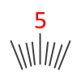

Главная → Знак сегментной шкалы
Знак сегментной шкалы – знак на шкале (символ, подпись), соответствующий некоторому измеряемому значению (рис. 1).
SegmentScaleSign - вспомогательный класс библиотеки круговых интерфейсов для реализации сегментной шкалы.

Рис. 1 - Знак сегментной шкалы
Для создания объекта типа SegmentScaleSign необходимо подключить следующие скрипты:
Для создания объекта в функцию-конструктор передаются основные параметры:
id - идентификатор подписи в виде текстовой строки.
context - контекст типа CanvasRenderingContext2D для отрисовки подписи.
cx - координата X центра сегментной шкалы.
cy - координата Y центра сегментной шкалы.
r_in - внутренний радиус подписи.
text - текст подписи.
angle - угол подписи в градусах.
font - шрифт подписи.
text_color - цвет текста.
text_border_width - толщина границы текста подписи.
text_border_color - цвет границы текста подписи.
text_direction - направление текста.Допустимые значения параметра text_direction:
"vertical" - вертикально относительно холста.
"clockwise" - по часовой стрелке.
"anticlockwise" - против часовой стрекли.
"from-center" - от центра.
"to-center" - к центру.
visible - видимость. Значение true обеспечивает видимость объекта.
in_progress - в процессе. Флаг принимает значение true в процессе анимации.
calc() - выполняет основные вычисления формы и внешнего вида подписис при ее создании, изменении параметров и в процессе анимации.
Этот метод необходимо вызывать после изменения свойств объекта, чтобы они вступили в силу.draw() - функция отрисовки подписи.
instanceCopy() - создание независимой копии объекта.
Анимация знака - это различные изменения формы, положения или стиля оформления подписи шкалы со временем.
Основные параметры анимации:
duration - длительность анимации. Задается в секундах.
delay - задержка перед началом анимации. Задается в секундах.
direction - направление анимации. Набор допустимых значений зависит от вида анимации.
appear(direction, duration, delay) - появление подписи за счет постепенного изменения формы.
Допустимые значения параметра direction для метода анимации появления:
"from-center" - от центра базового сегмента шкалы.
"to-center" - к центру базового сегмента шкалы.
"from-middle" - из середины подписи.disappear(direction, duration, delay) - исчезание подписи за счет постепенного изменения формы.
Допустимые значения параметра direction для метода анимации исчезания:
"from-center" - от центра базового сегмента шкалы.
"to-center" - к центру базового сегмента шкалы.
"to-middle" - к середине подписи.fadeIn(duration, delay) - постепенное появление подписи за счет изменения прозрачности.
fadeOut(duration, delay) - постепенное исчезание подписи за счет изменения прозрачности.
События, запускаемые объектом SegmentScaleSign, реализованы с помощью CustomEvent.
В поле detail.sign передается ссылка на сам объект.
segment-scale-sign-changed - подпись сегментной шкалы изменена. Событие запускается каждый раз, когда выполняется метод calc().
segment-scale-sign-appeared - подпись появилась.
segment-scale-sign-disappeared - подпись исчезла.
segment-scale-sign-faded-in - подпись появилась методом выцветания.
segment-scale-sign-faded-out - подпись исчезла методом выцветания.
Главная → Знак сегментной шкалы